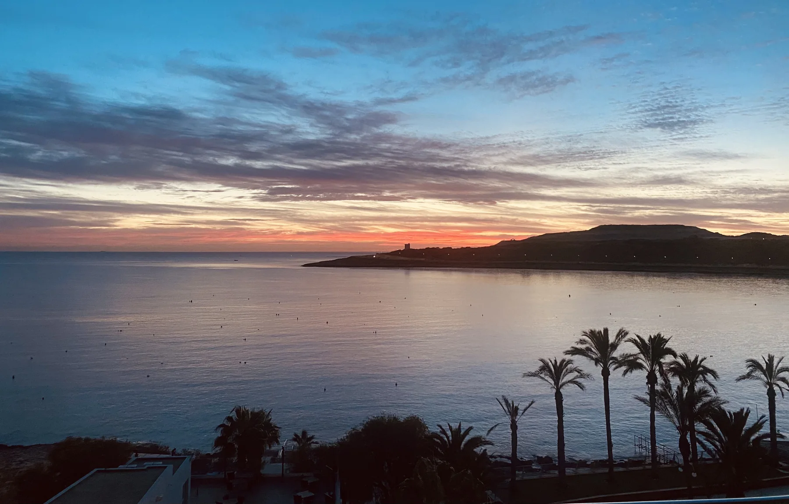

Qawra Point is the clearest coastal and activity context. Confirm the building's actual orientation, entrance and exposure rather than assuming a sea view.
QAWRA · READ THE PENINSULA
Coast outside. Daily life inside.
Start with the exact address: Qawra Point and the open coast, the residential streets behind it, then the neighbouring Buġibba and wider St Paul's Bay contexts.

VERIFY THE ADDRESS LABEL
Qawra belongs to a larger urban place.
The Address Registrar lists San Pawl il-Baħar as the official locality, while council and planning sources describe Qawra within its connected urban area. That context still does not make Qawra, Buġibba, old St Paul's Bay and Xemxija interchangeable property labels.
Triq il-Merluzz and the streets behind the coast need their own grocery, shade, crossing and access check from the exact property.
The built-up area meets Buġibba and old St Paul's Bay, but a continuous street pattern is not permission to merge every listing into Qawra.
A peninsula, not a view guarantee.
The licensed image gives a real sense of open-water context around Qawra. It says nothing about the outlook, noise, wind, access or parking at a particular building.
San Pawl il-Baħar Local Council ↗Use the verified address.
The official locality register names San Pawl il-Baħar rather than a separate Qawra locality row. A property-specific address remains the right basis for the neighbourhood label.
Office of the Address Registrar ↗OPERATOR-VERIFIED EXAMPLES
Everyday anchors and things to do.
These examples establish practical and leisure context. They are not rankings, and they do not claim that a venue is closest to every Qawra property. Check current access, hours and prices with the operator.
Welbee's Qawra
The operator lists its Qawra supermarket at Triq il-Merluzz. Route and distance still depend on the exact property entrance.
Operator store locator ↗Malta National Aquarium
The aquarium identifies its address at Triq it-Trunċiera, Qawra and documents its Qawra Point complex. Current admission and events remain with the operator.
Operator information ↗Cheeky Monkey
The operator identifies its Qawra Coast Road venue and publishes its own food offer. This is a sourced example, not a dining ranking.
Qawra venue information ↗Café del Mar Malta
The operator gives its address at Triq it-Trunċiera, Qawra. Opening, access, programme and prices are mutable and should be checked directly.
Operator contact page ↗No line across the water.
This edition draws no district boundary, sea shortcut, ferry line or walking route. Walking geometry, bus timetables, current car traffic and taxi-price observations are separate sources and require the exact origin, destination, mode and observation time.
Open the peninsula map only when you need it.
The overview includes Qawra Point, the inner peninsula and adjacent Buġibba context. It deliberately draws no neighbourhood boundary, route or journey time and loads from OpenStreetMap only after your click.
San Pawl il-Baħar Local Council · Office of the Address Registrar · Government planning material · Primary HealthCare · Welbee's · Malta National Aquarium · Cheeky Monkey Qawra · Café del Mar Malta
No ranking, fixed opening hours, property-specific route, accessibility promise, guaranteed view, parking claim or locality-wide journey time is claimed.